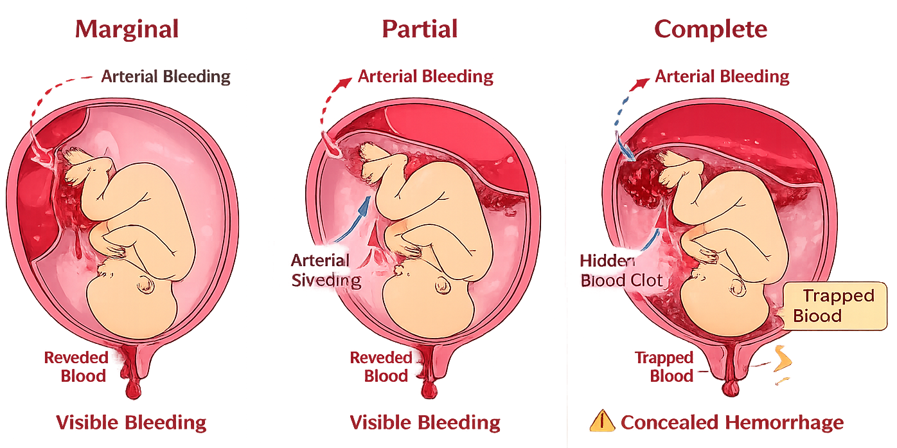

Maternal Health · Types, risk factors, THINK FAST mnemonic, nursing priorities
| Bleeding | Painless, bright red |
| Cause | Placenta covers cervical os |
| Uterus | Soft, non-tender |
| Delivery | C-section (if total previa) |
| Bleeding | Painful (may be concealed) |
| Cause | Placenta separates prematurely |
| Uterus | Rigid, "board-like" |
| Delivery | Emergency C-section |
Bleeding + Pain → Abruption
Bleeding WITHOUT Pain → Previa
Premature separation of a normally implanted placenta before delivery. Blood collects between the placenta and uterine wall → can be visible (external) or concealed (hidden behind placenta). Sudden onset of severe abdominal pain + rigid board-like uterus ± vaginal bleeding.
| Type | Description |
|---|---|
| Partial (Mild–Moderate) | Part of placenta separates; some bleeding visible or concealed |
| Complete | Entire placenta separates; maternal/fetal hemorrhage, shock |
| Concealed | Bleeding trapped behind placenta — NO visible vaginal blood; uterus tense, may enlarge |

| DO | DON'T |
|---|---|
| Establish large-bore IV access × 2 | NEVER do vaginal exam |
| Type and crossmatch blood immediately | No pelvic exam |
| Monitor FHR continuously (fetal distress) | Don't delay notifying provider |
| Monitor for signs of DIC (petechiae, oozing) | Don't miss concealed hemorrhage signs |
| Prepare for emergency C-section | Don't leave patient unattended |
| Administer O₂ 8–10 L/min via face mask | No unnecessary delays — time-critical! |
Severe abruption → Disseminated Intravascular Coagulation (DIC)
Signs: uncontrolled bleeding from IV sites, petechiae, oozing gums, hematuria.
DIC = a coagulation emergency. Monitor PT/PTT, fibrinogen, platelets. Administer blood products as ordered.